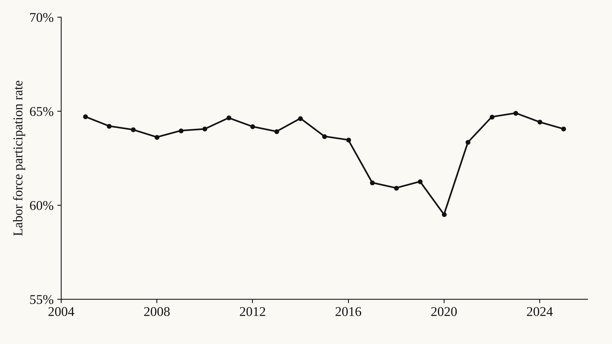
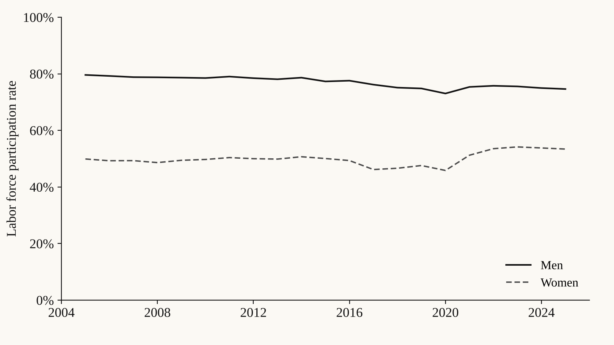

Projects · Labor economics · Time-series trends · Policy insight
Philippines Labor Market Trend Analysis
A labor-market analysis of employment quality, workforce composition, and underemployment patterns in the Philippines.

Context
I wanted to better understand employment and labor-market trends in the Philippines.
Data
Official Philippine labor force survey indicators and employment-by-sector series, including sex-disaggregated figures.
Method
I used Python, Pandas, and time-series trend analysis.
Output
Labor-market summaries, workforce trend tables, and policy-facing insights.
Findings
In 2025, labor force participation stood at 64.1%, unemployment at 4.2%, and underemployment at 11.4%. Underemployment remained almost three times the unemployment rate, pointing to job quality rather than job availability as the bigger gap.
Reflection
Next, I’d add forecasting models and regional-level comparisons.
Figures

